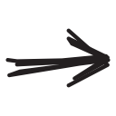

What is VXGI?
Voxel Global Illumination, VXGI, it is a new way, developed by NVIDIA, to simulate Global Ilumination.
Voxel Global Illumination (VXGI) is a stunning advancement, delivering incredibly realistic lighting, shading and reflections to next-generation games and game engines.
NVIDIA
The VXGI is a software library of a very complex rendering technique. This algorithm uses Voxel Cone Tracing to accumulate light contributions in the scene. This can not be build into the graphics driver, so we can not switch the graphical properties if we want to use it in a game, for example. It needs to be integrated into the game engine, but it is hard to do it. Only the Unreal Engine 4 supports this technology, for now.
This technique differs on previous alternatives because it uses a different data structure to encode the voxel data. Instead of using a Sparse Voxel Octree (like the Sparse Voxel Octree Global Illumination (SVOGI)) , it uses a 3D Clipmap.
A clipmap is a hierarchical data structure similar to a 3D mipmap with the difference of clipping finer levels, in order to don't exceed a pre-defined size.
The algorithm encodes the opacity and emittance information in the climaps and the executes the Voxel Cone Tracing to compute approximately the global illumination in real time.
How VXGI works?
The main steps of the VXGI technique consists on the voxelization of the scene, encoding the opacity and emittance information in the clipmap and then is used the voxel cone tracing to compute the global illumination.
3D Clipmap
A Clipmap is a multidimensional texture that were proposed as a solution to reduce the memory footprint of very large textures (Tanner et al., 1998), (Asirvatham and Hoppe, 2005).
For that purpose each level need to be clipped to a user-specified maximum size (ClipSize). This parameterization results in an obelisk shape for clipmaps as opposed to the pyramid of mipmaps. It also defines the size of the texture memory cache needed to fully represent the texture hierarchy.
ClipSize represents the limit, in texels, for any single level of a clipmap texture. In a normal mipmap, the texture size in memory would be bigger. Instead, the Clipmap retain the logical size and render-time accessing the corresponding level of a full mipmap.
Further is defined the
Below the Clipmap Stack is the Clipmap Pyramid, defined as the set of levels of sizes lower than the ClipSize limit. These levels are completely stored in texture memory and have the same spatial resolution of a full mipmap.
The regions near the camera are represented with finer levels of detail and far regions with coarser levels of detail. This maps nicely when applying voxel cone tracing, due to the higher spatial density of pixels near the camera (Daniel Gomes et al, 2015).
To prove the Clipmap storage efficiency lets consider a 13 level 40962 Clipmap to be rendered on a 10242 display. Given the display size, we know that the upper bound on texture usage from a single level is 20482, so we must set the Clipsize to 2048. There will be one clipped level forming our Clipmap Stack and 12 levels in the Clipmap Pyramid. The storage required for this is 20482 texels * 1 level + 4/3 * 20482 for the pyramid = 18.7 MB at 2 bytes per texel. This clipmap configuration requires only 18.7 MB of the full 42.7 MB of a full mipmap. The bigger the size of the clipmap, the bigger is the difference of memory usage between the mipmap and Clipmap. This is essencial to store the textures on the graphics dedicated memory and avoid constant swaps with RAM. The table below shows the diferences.
The clipmap must however be updated when the camera moves in order to maintain all the information needed around the camera to render the current frame. In order to prevent having to update the clipmap completely each time the camera moves, it is possible to take advantage of the fact that usually only a small part of the clipmap needs to be updated (a great portion of the data is already present in the Clipmap since it was needed in the previous frame) (Daniel Gomes et al, 2015). In order to update the Clipmap incrementally with the needed data, toroidal addressing is used (Tanner et al., 1998). Toroidal addressing is a method that guarantees that a point in space always maps to the same point in the texture as shown in the next image.
 Toroidal Addressing. Source: Tanner et al., 1998
Toroidal Addressing. Source: Tanner et al., 1998
Opacity Voxelization
The first step of the VXGI algorithm is the opacity voxelization and downsampling (NVIDIA VXGI). In this step, the scene geometry is converted to a map which encodes the opacity of space with voxels. If a cube matches a complete voxel, it will produce a fully opaque voxel. But after downsampling, the opacity is reduced to 50%. Each next level of downsampling reduces the previous level to half, like the textures in the mipmap.
The voxelization process starts by choosing the projection plane in order to maximize the number of fragments generated during rasterization (Daniel Gomes et al, 2015). However, the rasterization is performed in Multisample Anti Aliasing mode (MSAA) in order to produce multiple samples for the rasterized triangles.
 Voxelization using MSAA. Source: NVIDIA
Voxelization using MSAA. Source: NVIDIA
Then the depth coordinate is computed for each sample and reprojected into the other two planes.
Finally, a bit count function is used in order to convert the coverage masks obtained by MSAA to an opacity value.
Emittance Voxelization
In this pass it is used the opacity values calculated before to determinate the amount of light that geometry in their volume reflects or emits in all directions.
Starts by selecting the projection plane and rasterize the triangle. After that, the approximate light intensity for each voxel is computed. It can project the intensity to 3 or 6 directions. Finally, the directional intensities are accumulated for all rasterized triangles.
Objects can change their brightness abruptly if they move, due to alterations to te number of covered samples(small objects or large voxels in the coarse clipmap levels) (NVIDIA). To solve this problem, supersampling is used.
 Movements from small objects or inside large voxels. Source: NVIDIA
Movements from small objects or inside large voxels. Source: NVIDIA
The coverage masks are then used to generate the brightness value of the fragment and the emittance is computed with the help of a shadow map generated previously.
Voxel Cone Tracing
The final step is the cone tracing. This is the process that computes approximatly the surface irradiance coming from a set of directions, given a primary direction and the cone angle. This technique is described by the equation below.
Source: NVIDIA
The cone traverse the given direction, taking samples from the emittance texture that contribute to irradiance. In order to reduce light leaking, occlusion is also calculated as the product of opacities from all the previous samples (NVIDIA).
This step compute the diffuse and specular indirect illumination. The diffuse tracing shoots several cones from every visible pixel, into a set of directions covering the hemisphere.

Specular tracing shoots one cone from every visible specular surface in the reflected view direction. If the surface is rough, it is used a wider cone.

For finer surface, it is used a thiner cone. Due to the low spatial resolution, it is impossible to compute mirror-like reflections similar to ray tracing algorithms.

VXGI steps.
This section explains the main core of NVIDIA demo and some improvements that we made. Here you can download the latest version of our improved demo. You also can follow our tutorial and make your own demo in here.STEP 1 - Create the Voxels Global Illumination Object
First we need to create the Global Illumination Object and then insert the multiples parameters that are needed in order to work.
HRESULT CreateVXGIObject() {...}
The parameters used are a instance of VXGI::GIParameters.
VXGI::GIParameters params;
Using the variable params it is possible to render the interface ( g_pSceneRenderer instance of SceneRenderer* inicialized before ( SceneRenderer* g_pSceneRenderer = NULL; )), with the help of the scene renderer file.
params.rendererInterface = g_pSceneRenderer->GetRendererInterface();
GetRendererInterface() is a function from Direct3D and in VXGI is an instance of VXGI::Util::IRendererInterfaceD3D11 m_RendererInterface;
VXGI::Util::IRendererInterfaceD3D11* GetRendererInterface(){
return &m_RendererInterface;
}
Here we can see were VXGI is doing the shader type by calling Direct3D.
params.shaderType = VXGI::GIParameters::ST_D3D_BYTECODE_SM50;
Here it is possible to see the DLL that is being called:
params.d3dCompilerDLLName = "d3dcompiler_47.dll";
In our project we decide to give some options to the user for the inicialization of the application, in order to the user have more interaction with the application. Like the number of directions, changing to the booth Emittance and Opacity Map:
Six:
params.voxelizationParamters.opacityDirectionCount =
VXGI::OpacityDirections::SIX_DIMENSIONAL;
params.voxelizationParamters.emittanceDirectionCount =
VXGI::EmittanceDirections::SIX_DIMENSIONAL;
Or three:
params.voxelizationParamters.opacityDirectionCount =
VXGI::OpacityDirections::THREE_DIMENSIONAL;
params.voxelizationParamters.emittanceDirectionCount =
VXGI::EmittanceDirections::THREE_DIMENSIONAL;
Besides that it is possible to change the size of the Clipmap and it is important to reference that the bigger the Clipmap value, the lower it will be the size of each voxel, resulting in a better visual aspect but the performance will decrease. This variable variates between 16 and 256:
params.voxelizationParamters.mapSize = (unsigned)ClipSize;
Next we need to disable the scatter light injection. Why? Because we only want to use the light from the voxelization.
params.voxelizationParamters.maxScatterIterations = 0;
In the bellow code it is possible to see that VXGI send error messages in case something went wrong. If it was in the creation of the global illumination object:
if(VXGI_FAILED(VFX_VXGI_CreateGIObject(params, &g_pGI))){
MessageBoxA(g_DeviceManager->GetHWND(),
"Failed to create a VXGI object.",
"VXGI Sample", MB_ICONERROR);
return E_FAIL;
}
If it was in the creation of the global illumination tracer:
if(VXGI_FAILED(g_pGI->createNewTracer(params, &g_pGI))){
MessageBoxA(g_DeviceManager->GetHWND(),
"Failed to create a VXGI tracer.",
"VXGI Sample", MB_ICONERROR);
return E_FAIL;
}
Otherwise it will create the Global Illumination Object and the Global Illumination Tracer.
STEP 2 - Create Voxelization Geometry and Pixel Shaders
Next we need to create the voxelization on the geometry shader from the vertex shader. This is made on the SceneRenderer, unlike the previous step that was performed on the Main file. This voxelization (in the geometry shader) is made by calling:
g_pGI->createVoxelizationGeometryShaderFromVS
(&m_pVoxelizationGS, g_DefaultVS, sizeof(g_DefaultVS))...
But there are other method to make this:
g_pGI->createVoxelizationGeometryShaderFromDS
(&m_pVoxelizationGS, g_DefaultVS, sizeof(g_DefaultVS))...
After this, we need to do the voxelization on the pixel shader and like the case above there are two ways to do it:
Advanced:
g_pGI->createVoxelizationPixelShader
(&m_pVoxelizationPS, desc)...
Default:
g_pGI->createVoxelizationDefaultPixelShader
(&m_pVoxelizationPS, desc)...
STEP 3 - Scene Voxelization
The next step it is to voxelize the scene. In order to do so there are a few calls there are needed, besides that it is important to reference that this calls are made inside the render function in the Main file.
First we need to attribute some values to the parameter params.
VXGI::LightDesc light = g_pSceneRenderer->GetLightDesc();
VXGI::UpdateVoxelizationParameters params;
params.clipmapAnchor = VXGI::Vector3f(centerPt.m128_f32);
params.giRange = g_fClipmapRange;
params.lights = &light;
params.lightCount = 1;
Next we need to create two booleans initialized with false to be used further in the code:
bool performOpacityVoxelization = false;
bool performEmittanceVoxelization = false;
Next we need to call the function prepareForOpacityVoxelization() passing the booleans created before as arguments:
g_pGI->prepareForOpacityVoxelization( params,
performOpacityVoxelization,
performEmittanceVoxelization);
After this we need to check the value of the previous booleans:
if(performOpacityVoxelization || performEmittanceVoxelization){ ... }
If any of them has the flag with value true we continue. Next we need to get the invalidated regions. This is a set of world-space boxes that contains some geometry that changed since the previous frame. This is important because we only need to voxelize the things that change or the newest parts of the scene that we now can voxelize.
If this occurs then we can perform the Emittance and/or the Opacity voxelization steps, according the value of the previous booleans:
if(performOpacityVoxelization)
g_pSceneRenderer->RenderSceneCommon(g_pGI , regions,
numRegions, voxelizationMatrix, NULL, true);
if(performEmittanceVoxelization) {
g_pGI->prepareForEmittanceVoxelization();
g_pSceneRenderer->RenderSceneCommon(g_pGI , NULL, 0
voxelizationMatrix, NULL, true);
}
And finally we only need to finalize the voxelization process:
g_pGI->finalizeVoxelization();
STEP 4 - Cone Tracing
First we need to attribute some values to the parameters diffuseParams and specularParams:
VXGI::DiffuseTracingParameters diffuseParams;
VXGI::SpecularTracingParameters specularParams;
diffuseParams.numCones = g_numcones;
diffuseParams.tracingSparsity = g_tracingSparsity;
diffuseParams.enableConeRotation = g_cone_rotation;
diffuseParams.irradianceScale = g_fDiffuseScale;
specularParams.irradianceScale = g_fSpecularScale;
specularParams.filter = VXGI::SpecularTracingParameters::FILTER_NONE;
This parameter adds occluded directional ambient color to the scene. It is an array with six positions for every direction of each voxel, ordered as follows: X+, X-, Y+, Y-, Z+, Z-.
for(n = 0; n < 6; n++) {
diffuseParams.ambientColors[n] = ambientColor;
Case the g_fDiffuseScale variable it is greater then zero the diffuse component will be computed:
if(g_fDiffuseScale > 0) {
g_pGITracer->computeDiffuseChannel(diffuseParams,
indirectDiffuse, inputBuffers);
Case the g_fSpecularScale variable it is greater then zero the specular component will be computed:
if(g_fSpecularScale > 0) {
g_pGITracer->computeSpecularChannel(specularParams,
indirectDiffuse, inputBuffers);
Application & Tutorial
This section has the purpose of helping the users to test the improved demo that we made based on NVIDIA's demo. It contains a detailed tutorial to ease the interation between the user and the interface.
If you want to try the demo for yourself you can download it here.
Before Starting the Application
- Open Terminal in "bin" folder.
- Execute GFSDK_VXGI_Sample_GlobalIllumination_x64.exe along the following parameters:
- Name of the model in folder "media"
- Number of Directions (3 or 6 directions)
- Size of the Clipmap

We only provided the Sponza model in our link above, but you can download other famous models like Rungholt and Power Plant here.
After Starting the Application
After starting the application, the object is shown with the respectively frames per second. A simple interface is also displayed in the upper-left corner with modifiable parameters that change the scene appearence in real time.
{kind=link}
To view the voxelization process you can alternate the debug options by pressing 'g'. As you can see below, the scene is first voxelized and after that is performed the emittance voxelization to emit and reflect the light injected directly in the scene.

|

|
|
| Main Scene | Opacity Voxelization | Emittance Voxelization |
{kind=link}
Also is possible to switch on and off the global illumination of the scene by clicking on the Enable GI button. The results are shown on the images below.

|

|
| No Global Illumination | With Global Illumination |
The objects that are not directly illuminated do not have any color. They are only visible due to the ambient color. Disabling this parameter(Ambient Scale value is 0.0) the non-illuminated sections are black. By enabling the global illumination are now visible due to the indirect diffuse color and specular light.

|

|
| No Global Illumination | With Global Illumination |
The scene may suffer from banding issues. To reduce this effect we can use the Cone Rotation parameter. It performs a random per-pixel rotation of the diffuse cone set. This results on a better visual result, but costs some performance.

|
|
| No Cone Rotation | With Cone Rotation |
{kind=link}
By enable and disable the shading parameters, like the diffuse color or specularity, we can see different results on the desired scene.

|

|

|
| Only Direct Light | Ambient Color Only | Diffuse Color Only |

|

|
| Specular Light Only | All parameters Enabled |